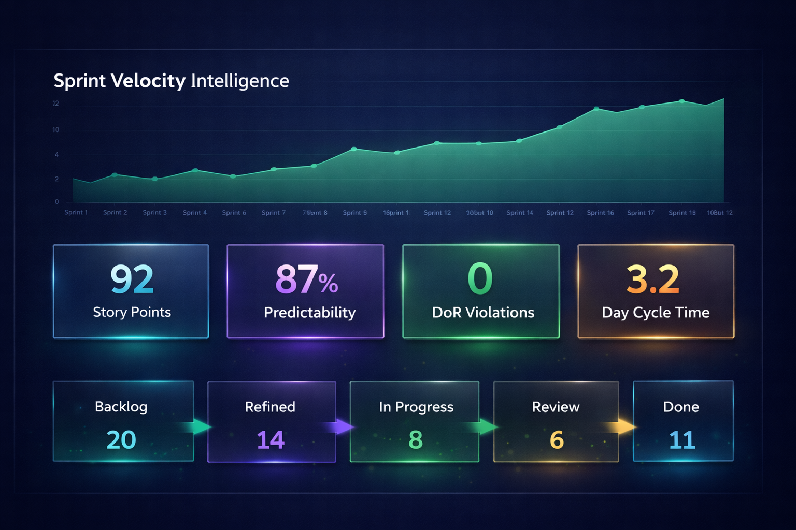
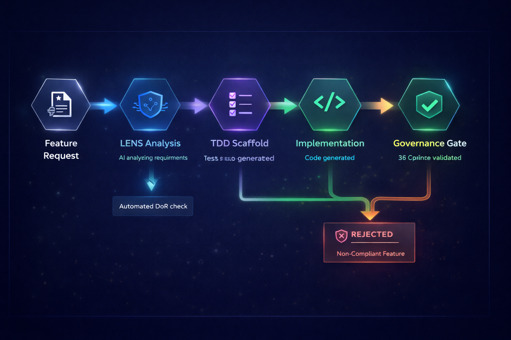
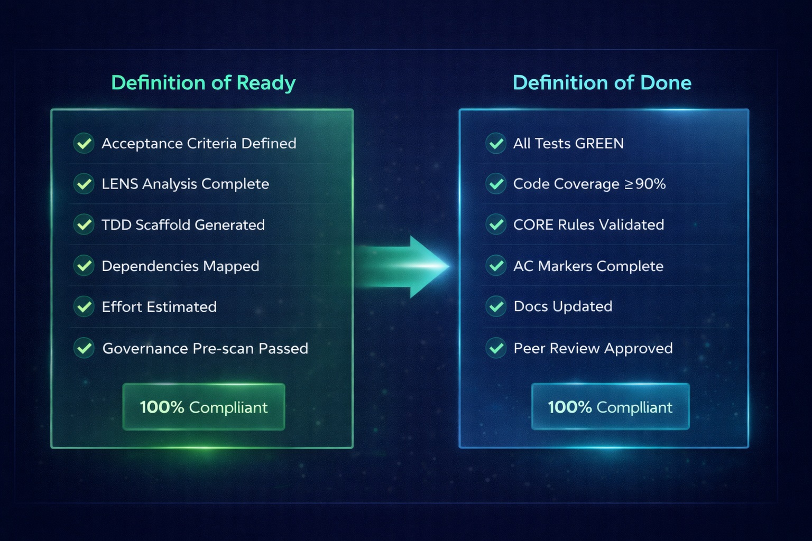

Product owners live in the gap between what stakeholders want and
what engineers can build. CORTEX closes that gap.
It enforces your Definition of Ready on every story, validates acceptance criteria
before a single line of code is written, and delivers an auditable trail that proves
each feature shipped exactly as specified — sprint after sprint, no exceptions.
87 Sprints Delivered On Standard
100% Acceptance Criteria Validated
Zero Surprise Defects in Production
Delivery Metrics That Matter
🚀
87
Consecutive Phases Delivered
CORTEX has shipped 87 consecutive delivery phases — every one TDD-validated, governance-checked, and audit-logged. That is predictable velocity, not luck.
✅
16,942
Automated Acceptance Tests
Each feature ships with an automated test suite that proves acceptance criteria were met. No manual regression cycles. No "it worked in staging" surprises.
🛡️
38
Governance Rules Auto-Enforced
38 CORE rules run at every commit. Architecture drift, security vulnerabilities, and quality gate failures are caught before they reach your sprint review.
🔁
TDD
Test-First on Every Story
CORE-008 mandates: tests before implementation, no exceptions. Your acceptance criteria become executable tests before the first line of feature code is written.
🧠
LENS
Codebase Intelligence
CORTEX's LENS pipeline (Language→Examination→Navigation→Synthesis) scans the entire codebase on every change. Blind-spot detection before stories are closed.
⚡
4×
Faster Root Cause Analysis
When something goes wrong, CORTEX's RCA Engine (Five-Whys, Fishbone, Fault-Tree, Causal-Chain) finds the root cause in minutes and generates a prevention rule.
From Story to Shipped — The CORTEX Pipeline
1
Backlog
Refinement
Story + AC captured
2
DoR
Validation
CORTEX checks readiness
3
TDD
RED Phase
Failing tests written first
4
Implementation
GREEN
Minimum code to pass
5
Governance
Gate
38 rules enforced
6
LENS
Scan
Security + architecture
7
AC
Audit Log
Timestamped proof
8
Ship
✓ Done
Zero surprises
CORTEX-Enforced Definition of Ready & Done
Definition of Ready (DoR)
-
User story written — Who / What / Why captured in plain language
-
Acceptance criteria defined — At least 3 testable AC clauses, no ambiguity
-
Dependencies identified — Upstream/downstream services mapped by LENS
-
Effort estimated — Story points agreed, complexity scored
-
Security classification set — PHI / PII / public data labelled
-
Governance rules identified — CORE rules applicable to this story noted
-
TDD skeleton approved — Failing test structure reviewed before sprint start
Definition of Done (DoD)
-
All AC tests GREEN — Every acceptance criterion has a passing automated test
-
38 governance rules passed — EnforcementOrchestrator cleared at commit
-
LENS scan clean — No new security vulnerabilities or architecture drift
-
AC audit log written — AC_START + AC_COMPLETE timestamps in SQLite
-
Regression suite green — No existing tests broken
-
Code reviewed & merged — Machine-checked before human review
-
Deployed to staging — Health check passed, Prometheus metrics nominal
CORTEX Quality Gates — Automatic, Every Story
TDD — Tests Before Code
38 CORE Rules
LENS Security Scan
AC Audit Log
Health Orchestrator
RCA Memory Engine
29 MCP Tools
Prometheus Metrics
Product Intelligence Visuals

Sprint Intelligence Dashboard — Velocity, predictability, and cycle time at a glance

Feature Delivery Pipeline — 6-stage automated flow from request to shipped

DoR/DoD Compliance — Every story automatically validated before and after sprint
LENS Intelligence Pipeline — How CORTEX understands your codebase
Built for Product Owners
📋
Backlog Integrity — Always
CORTEX's IntentRouter classifies every incoming request against your backlog categories. Stories without clear acceptance criteria are flagged before planning — not surfaced mid-sprint by a confused developer.
🧪
Acceptance Criteria Become Tests
TDDOrchestrator (CORE-008) converts your AC clauses into failing tests before implementation begins. If it cannot be tested, it cannot be built. Ambiguity is eliminated at the source.
🔮
Risk Surfaced Before Sprint Start
LENS analysis detects dependency risks, security gaps, and architectural conflicts during backlog refinement — not during sprint review when it is too late and too expensive to fix.
📊
Sprint Velocity You Can Trust
Every phase is logged with Prometheus metrics and SQLite activity traces. Velocity calculations are based on completed, governance-verified work — not optimistic estimates that drift by Friday.
🤝
Stakeholder Communication Made Simple
CORTEX's audit trail turns "what shipped this sprint?" from a manual chase into a query. Every feature has a timestamp, a test result, and a governance sign-off — ready to present to any stakeholder.
🗺️
Roadmap Confidence, Not Hope
87 consecutive phases delivered on standard means CORTEX's velocity is measurable and repeatable. Roadmap commitments are backed by engineering data, not gut feel — conversations with executives become evidence-based.
🔄
Root Cause → Prevention Rule
When a story causes a defect, CORTEX's RCA Engine runs four structured methodologies (Five-Whys, Fishbone, Fault-Tree, Causal-Chain) and writes a prevention rule to the governance registry — so the same mistake cannot recur.
🤖
AI-Assisted, Governance-Guarded
CORTEX orchestrates GitHub Copilot with 38 governance gates. AI suggestions that violate your quality standards are blocked automatically — accelerating delivery without creating the hidden debt that slows future sprints.